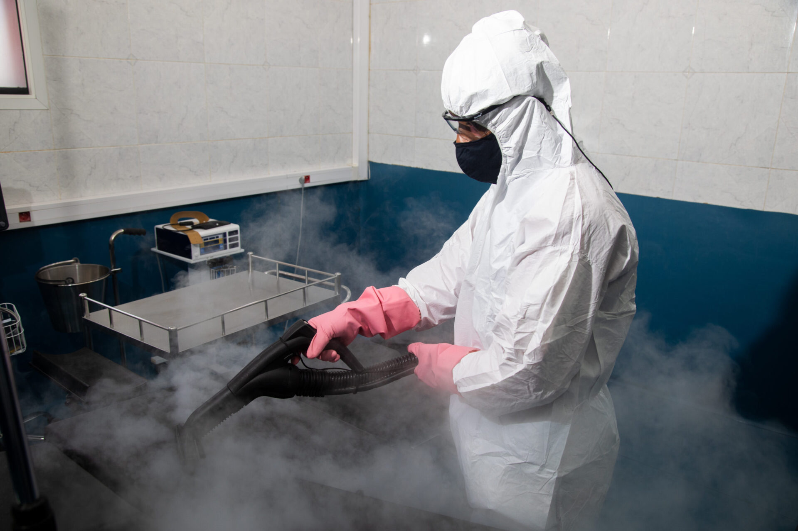
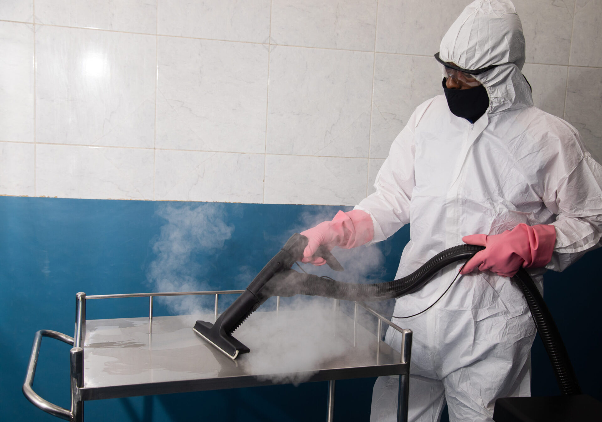
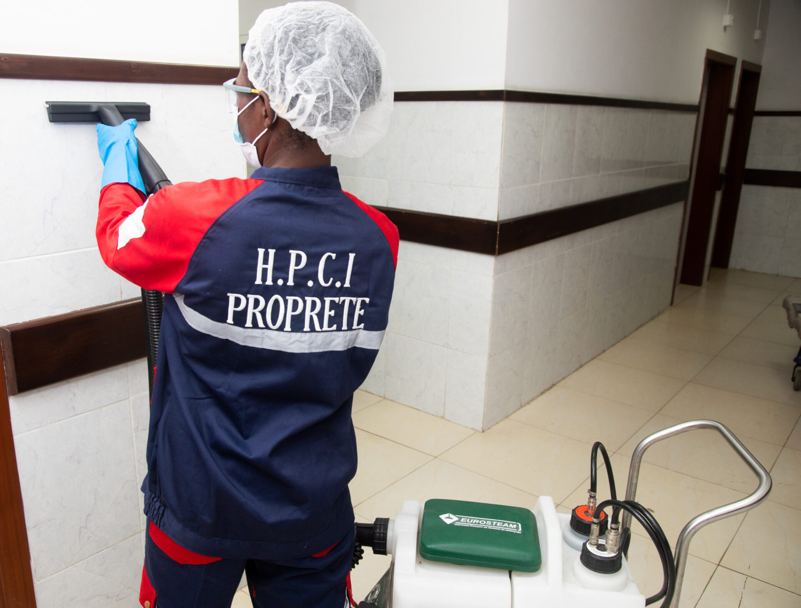

Une technique de nettoyage respectueuse de l’environnement, utilisant des produits biologiques pour un haut niveau d’hygiène.
Le bio-nettoyage en milieu hospitalier est une pratique cruciale pour maintenir des normes d’hygiène élevées et réduire les risques d'infections nosocomiales. Notre approche repose sur l’utilisation de produits biodégradables minimisant l’impact sur les patients et le personnel.


